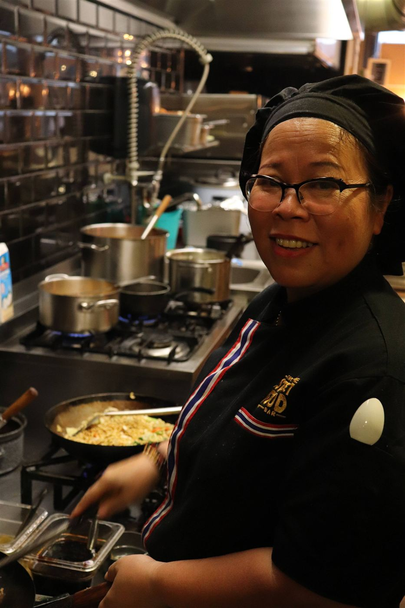
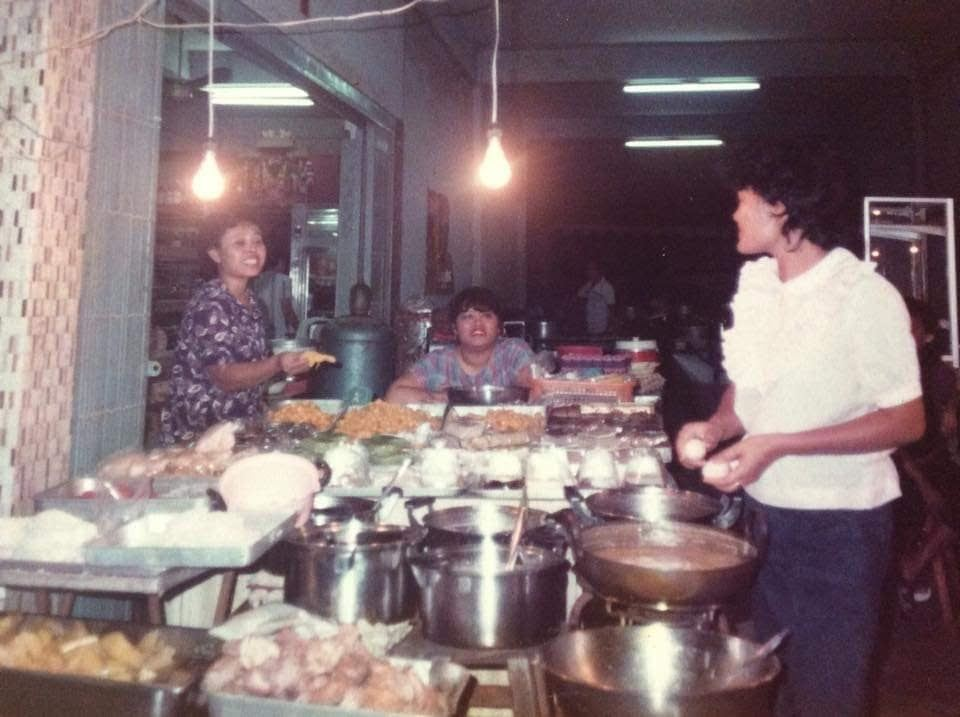

Even voorstellen: Nittaya
Sinds 2019 staat Nittaya aan het roer van The Streetfood Bar. Ze komt uit Thailand en woont al bijna 26 jaar in Nederland.
Op haar tiende hielp ze al in de winkel van haar moeder in Thailand, waar streetfood werd gekookt. Later kookte ze voor verzorgingstehuizen en ziekenhuizen en werkte ze twintig jaar in de supermarkt: bij de slagerij van C-1000, later bij Jumbo, ook op groente en fruit en bij kookpromoties.
De vorige eigenaar was vaste klant bij haar. Hij vroeg haar eerst als kok en later of ze de zaak wilde overnemen.
"Met veel plezier kook ik, samen met het Streetfood Bar team, dagelijks verse en authentieke Thaise maaltijden voor jou."